Shop › Dish racks & kitchen accessories
Dish racks & kitchen accessories in Kenya
Dish racks and kitchen accessories in Kenya: above-sink dish racks, measuring jugs, kitchen towels, towel holders, mug trees and scoops.
Open dish racks & kitchen accessories in the shopCupboard organisers · Baking & pastry tools · Oil bottles & sprayers · Cooking utensil sets · Kinu & mortars · Dish soap pumps & caddies · Dish racks · Wall & shelf foil stickers · Kitchen tools & gadgets · Measuring jugs · Kitchen towels & holders · Dish soap pumps & caddies
Cupboard organisers (1)
Baking & pastry tools (1)
Oil bottles & sprayers (4)
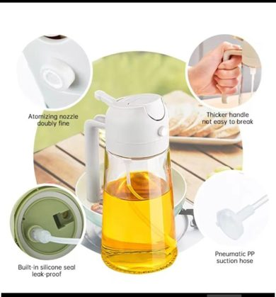
2-in-1 pour & spray glass oil bottle, 600mlKES 890
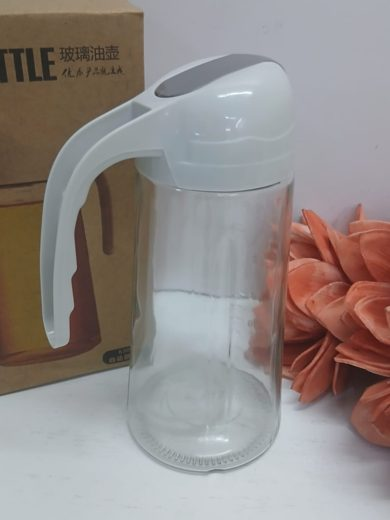
Automatic flip-top glass oil dispenser, 630mlKES 690
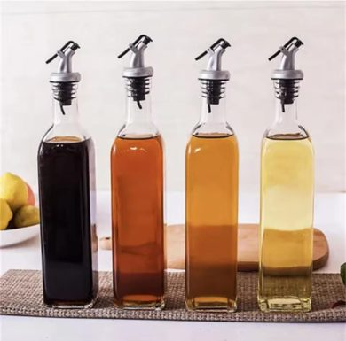
Borosilicate glass oil bottle with drip-free pourer, 500mlKES 690
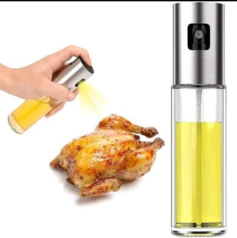
Oil spray bottle 100ml, stainless topKES 350
Cooking utensil sets (1)
Kinu & mortars (1)
Dish soap pumps & caddies (5)
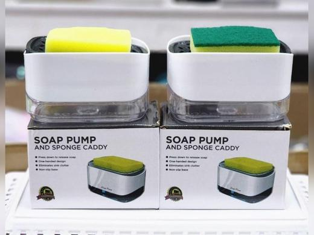
Acrylic soap pump and sponge caddyKES 790
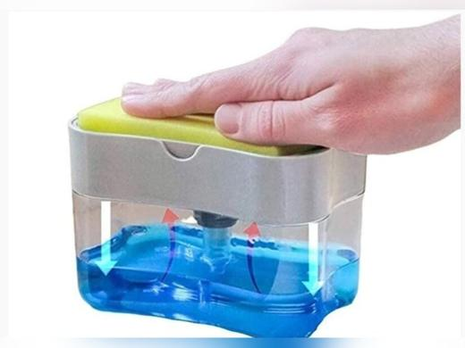
Soap pump with spongeKES 490
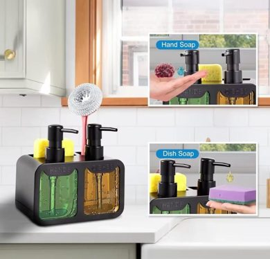
Hand & dish soap dispenser set with sponge holderKES 1,290
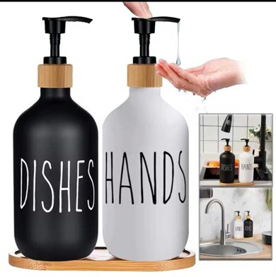
DISHES & HANDS dispenser pair with bamboo trayfrom KES 1,290
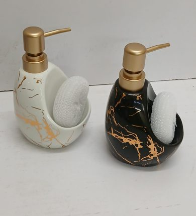
Marble ceramic soap dispenser with sponge holder, 500mlKES 890
Dish racks (2)

Wall & shelf foil stickers (1)
Kitchen tools & gadgets (6)
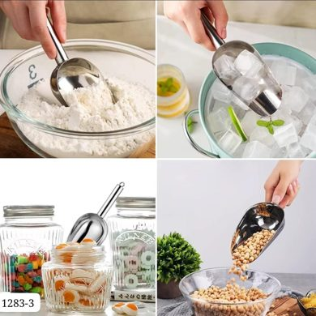
Stainless ice scoop, small (1283-3)from KES 490

Wing wine opener (8806)KES 690

Pizza & dough cutter, bamboo handle (MJ-XH029)KES 390
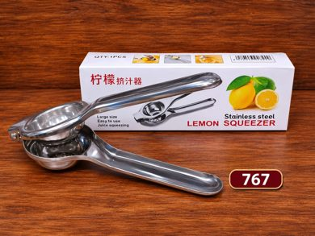
Stainless lemon squeezer (767)KES 450

Rainbow measuring cups & spoons, 6pcsKES 450
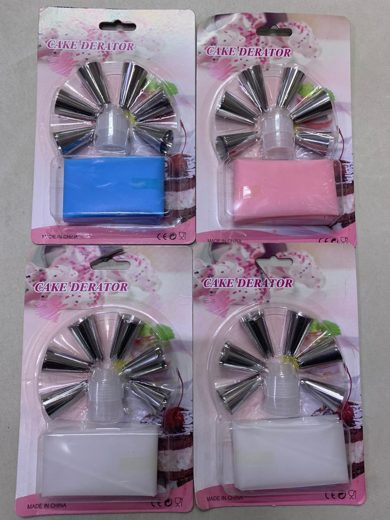
Cake decorating nozzles & piping bag set, 8pcsKES 450
Measuring jugs (3)

Glass measuring jugs, both sizesKES 2,390
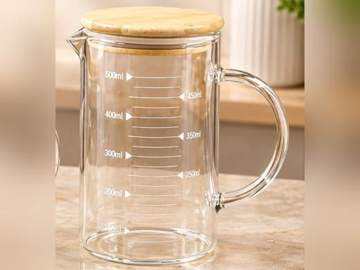
Glass measuring jug with bamboo lidfrom KES 1,190

Stallion measuring jug 1.5LKES 250
Kitchen towels & holders (9)
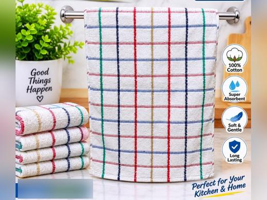
Cotton kitchen towels, pack of 3KES 990

Hanging kitchen towels, pack of 4KES 590

Kitchen towel comboKES 1,290

Gold kitchen pairKES 1,490

Gold mug treeKES 990
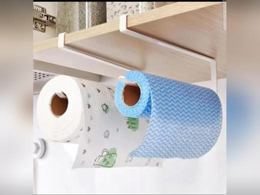
Under-shelf double roll holderKES 690
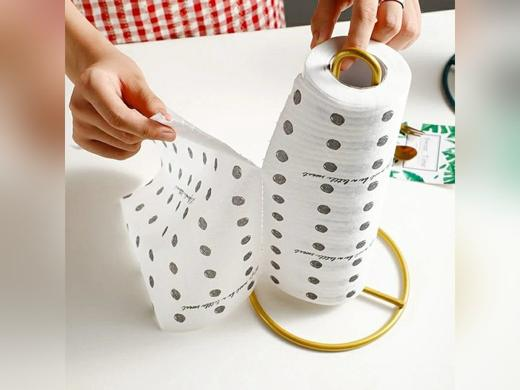
Gold kitchen towel holderKES 590

Steel kitchen towel holderKES 490
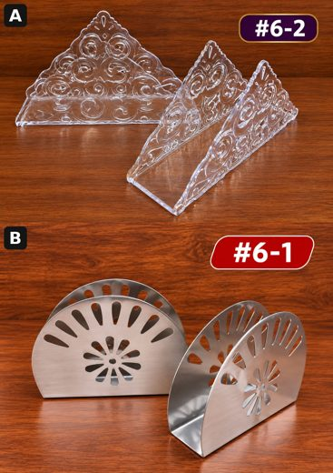
Serviette holder, clear acrylic or steelKES 450